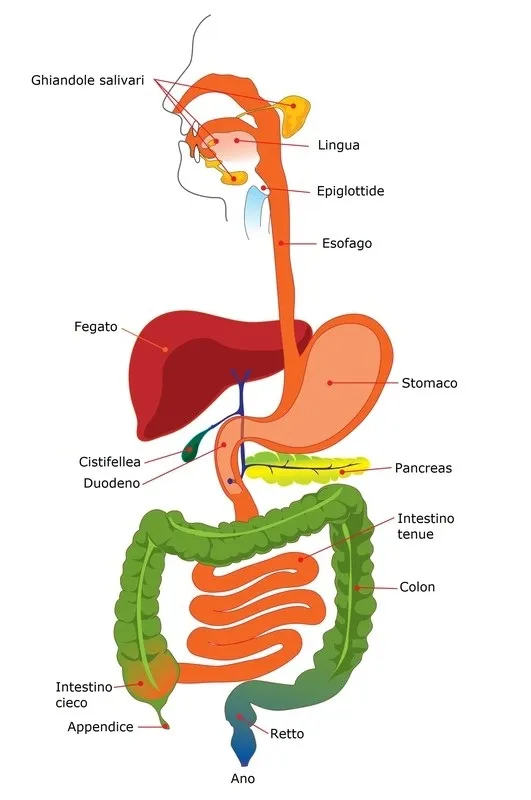

IN BREVE
Un viaggio in quattro tappe
Ogni organo svolge un compito preciso: trasformare il cibo, assorbire ciò che serve e liberarsi degli scarti.
1. Dalla bocca allo stomaco
La digestione inizia in bocca. Qui avvengono due azioni importanti: i denti tritano il cibo (digestione meccanica) e la saliva inizia a sciogliere gli zuccheri (digestione chimica).
Il cibo impastato prende il nome di bolo. Quando deglutiamo, il bolo attraversa la faringe e scende lungo l'esofago, un tubo muscolare che lo spinge verso lo stomaco grazie a movimenti involontari chiamati peristalsi.
2. Lo stomaco: un potente frullatore acido
Lo stomaco è un organo a forma di sacco con pareti molto muscolose. Al suo interno produce i succhi gastrici, che contengono acido cloridrico ed enzimi.
L'acido uccide i batteri presenti nel cibo e aiuta a scomporre le proteine. Dopo qualche ora di rimescolamento, il bolo diventa una poltiglia liquida e acida chiamata chimo.
3. L'intestino tenue e l'assorbimento
Il chimo passa nell'intestino tenue, un tubo lungo circa 7 metri ma ripiegato su sé stesso. Nella prima parte (il duodeno) arrivano due aiuti fondamentali: la bile (prodotta dal fegato) e il succo pancreatico (prodotto dal pancreas).
La digestione finisce qui: il cibo ora è un liquido ricco di nutrienti chiamato chilo. Le pareti dell'intestino tenue sono ricoperte da milioni di piccole pieghe, i villi intestinali, che assorbono i nutrienti e li passano al sangue.
4. L'intestino crasso e gli scarti
Tutto ciò che il nostro corpo non può digerire (come le fibre della verdura) finisce nell'intestino crasso. Questo tratto è più corto ma più largo del tenue.
Il suo compito principale è riassorbire l'acqua e i sali minerali. Qui vive anche il microbiota (la flora batterica), miliardi di batteri "buoni" che ci aiutano a produrre alcune vitamine. Gli scarti solidi finali (le feci) vengono espulsi attraverso il retto.
✍️ Esercizio: Metti in ordine il viaggio del cibo
Prova a riordinare sul tuo quaderno queste 6 tappe del percorso del cibo, dalla prima all'ultima:
- A. Formazione del chimo nello stomaco
- B. Assorbimento dei nutrienti nei villi intestinali
- C. Masticazione e formazione del bolo in bocca
- D. Riassorbimento dell'acqua nell'intestino crasso
- E. Passaggio lungo l'esofago
- F. Arrivo della bile e del succo pancreatico nel duodeno
Sequenza corretta:
- C. Masticazione e formazione del bolo in bocca
- E. Passaggio lungo l'esofago
- A. Formazione del chimo nello stomaco
- F. Arrivo della bile e del succo pancreatico nel duodeno
- B. Assorbimento dei nutrienti nei villi intestinali
- D. Riassorbimento dell'acqua nell'intestino crasso
🎯 Mettiti alla prova: Quiz veloce
Scegli la risposta corretta per ogni domanda e poi calcola il tuo punteggio.